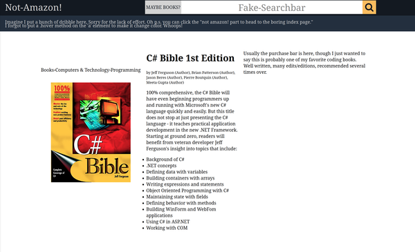
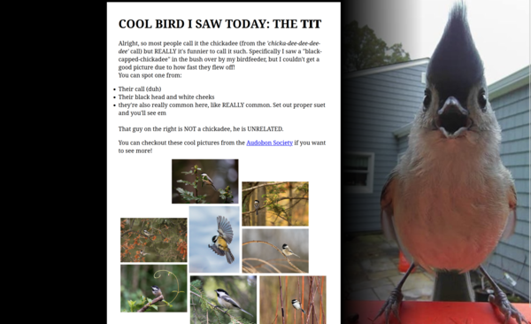
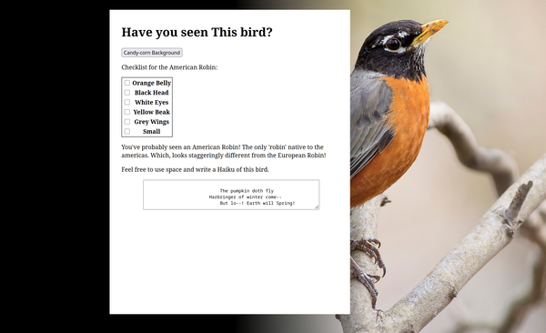
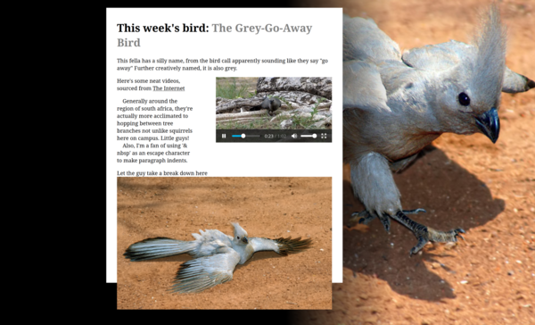
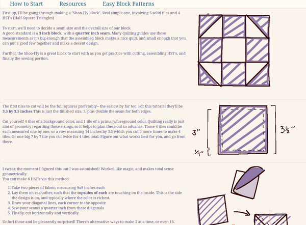
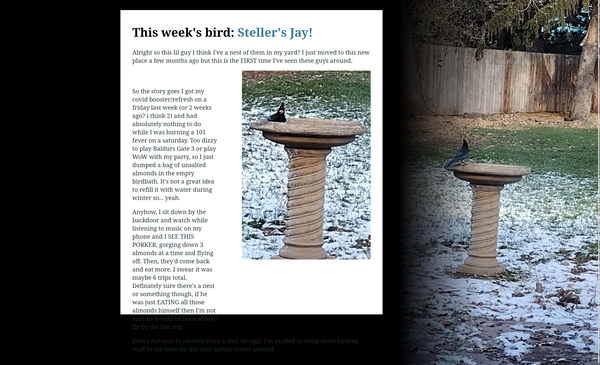
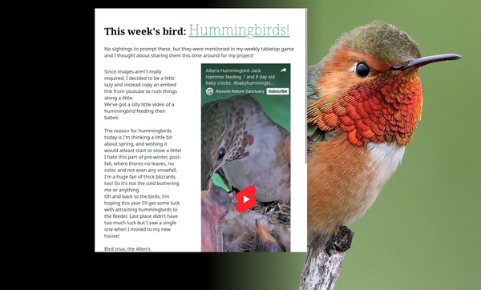
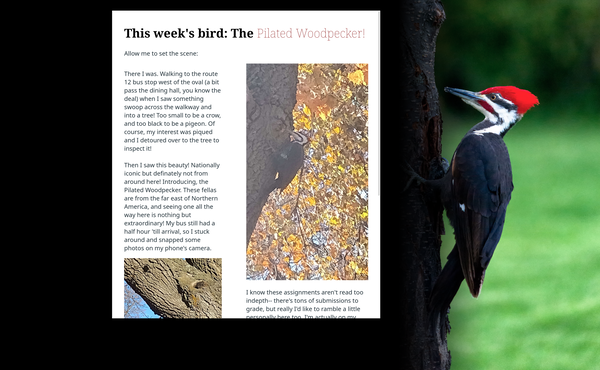
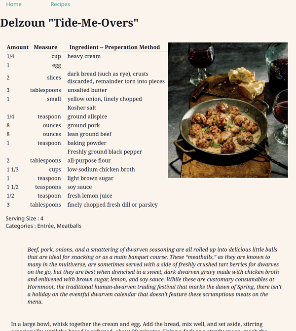
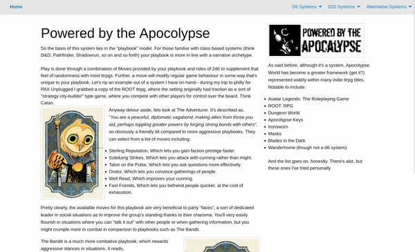

Media Arts - HTML
In lieu of a proper HTML class being taught at the time, I was directed towards taking the Media Arts Department's course offerings to fulfill a requirement; and what a lovely turn that was! Over the semester, we would submit weekly assignments featuring some new HTML component as a requirment, and although it was basic for me to integrate what was left was a very creatively fulfilling experience. Even years later reviewing these building the portfolio, this still feels like a scrapbook from the past. I highly recommend trying this whole deal of "make a page a week" sort of deal. Or maybe I should just pick up blogging or journaling...
Below is a week-by-week breakdown of the assignments, including a delightful little image to accompany them. You may also feel free to look at the github repo itself, which features a changelog of submissions as well. Lastly, you can click the anchors tags for each link to reveal them in a new tab. Otherwise, the accompanying images should be plenty fine.
Week 1-3
These early weeks were focused on the process of making each file, term definitions, and so on. Not too impressive to look at, and lacked pages to even go along with them. Admittedly they were good vocab to learn, but my notes aren't worth showing here.
The first HTML page submission! Extremely basic, and only requiring an image if memory serves. On there, I put a spinning water melon gif -- food gifs were all the rage back then.

This one added page navigation! Or more specifically, I believe it required making a faux website? It's hard to remember, but the end result is quite silly. It's the assignment 4 page, but with a navigation link to a faux amazon featuring the C Bible for sale. This was around the time I was learning C in my own studies, and it made a small reflection here. Further assignments would begin to take on a more personal hint with my interests in birding, and even eventually talking about my own trips across the US.

The first bird page! These bird pages were sort of a running theme -- where every bird that I saw that week I would turn into the basis of the assignment. Not all of them had actual photos from me, but they were all seen in my back yard (save for a rare sight a few weeks later on the university!). This one in particular was about the black-capped chickadee, which for some reason I accidentally call a tit on occasion. On the right, a titmouse is featured for comparison. It's an awful mistake to make, frankly.

The american robin, which features virtually no resemblance to the european robin. Besides the orange, anyway. This assignment was to add some interactable form elements, and it was at this point the bird theme fully set in. Content in the middle, bird image in the back. The default poem there is from me, just as an FYI. I'm not as good of a wordsmith as a coder, but we can't be everything all at once.

Ok, I admit, I did not see the south african Grey-Go-Away bird in my backyard; but I learned about this guy that week, and I was fascinated! What a little fellow. I have a soft spot in my heart for very gently colored birds such as house-sparrows and the grey-go-away bird. However, I do begroan the small formatting issue I had with the page this time. It was after submission I realized my image scaling inconsistancy. Oops. In the future I'd use a scroll bar to manage the height, but in this one the thought escaped me and I was too late anyway.

Oops, a non bird assignment! This one required multiple pages, and the birds were getting pretty migratory at this point in the year and the feeder wasn't seeing much action; but you know what was? My quilting activities! I was setting up a new 7'x 7' quilt for a gift in an upcoming trip, and decided to share some of my notes on basic blocks as a website. This features some custom images as boiling-line gifs from yours truely. I didn't draw for any of the other pages, so this one still stands out a bit in that regard.
Coming to me now, I think it could've been a cute idea to include a little doodle of each weekly bird. Those probably would've taken half of the assignment time anyway, though.

What a joy! I made this one during the period of recovery from my Covid vaccine at the time, and when I was home from classes I saw this fella grabbing nuts off the emptied bird bath. He came and went a few times, so I had plenty of chances to get some sick photos of them for the web page. This one has ANOTHER sloppy issue about sizing -- the text runs down the bottom a bit. It's ignorable overall though.

Alright, I fibbed here too -- no humming birds in November. It came up in talk with friends though, and I was shown this silly video of how they feed their young. They look like little jackhammers, it's amazing they don't get hurt doing this!

Getting a photo of a bird, and then seeing that the same photo is used for a cover of them in a birding manual feels like spotting a celebrity! A celebirdy, if you will bear with me. Regardless, this fellow I spotted at the University, which is WILDLY out of their usual region! I've never seen one in Montana since, so this was definately a special viewing. I really thought he was another Northern Flicker (still beautiful) at first, and then was all "huh??", y'know?

This is actually the first appearance of my online cookbooks, I think! This particular page stored 3 different recipes from the Dungeons and Dragons cookbook, which would later be expanded to my cookbook work in my SQL Database Design class and my Advanced Web Design class (Go see the Cookbook section in Artefacts to see how that went!)
Another page on this site features news about my upcoming trip to Philidelphia for PAX Unplugged at the same time too, and it feels like a blast from the past to read about my first time going to a convention in another state. I digress, reminiscence isn't fit for a portfolio, but it's still very meaningful to me nonetheless.

The last page, which required the use of some other framework and multiple navigable pages. After the prior trip to PAX Unplugged, my interests were tilted back towards Tabletop games and I felt reinvigorated to talk about them in my assignment instead of birds for the week. TTRPGS are a big part of my personal interests and passions, and it felt freeing to speak about them outside of my friend group.
